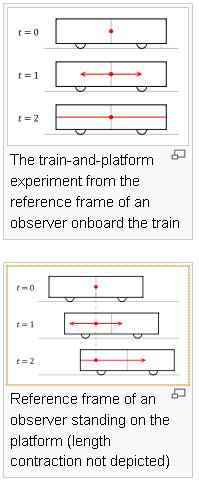
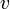
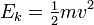
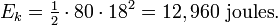

Special Relativity
"If the facts don't fit the theory, change the facts." —Albert Einstein
Einstein's theory of special relativity is comprehensible on an intuitive level, but you have to put on your thinking cap. Though the formulae below may at first seem opaque and mysterious, by simply substituting arbitrary values it is possible to get an inkling of the mathematical relationships. (N.B. much of the material below was condensed from Wikipedia.)
At about the same time that Bertrand Russell discovered that the foundations of modern mathematics were built on "a tissue of fallacies," Einstein made a similar discovery in the field of physics, i.e. that neither the mechanics or electrodynamics of the day met the requirements of exact science. In his autobiographical notes published in November 1949 he described how he had arrived at the two fundamental postulates on which he based the special theory of relativity. After describing in detail the state of both mechanics and electrodynamics at the beginning of the 20th century, he wrote
"Reflections of this type made it clear to me as long ago as shortly after 1900, i.e., shortly after Planck's trailblazing work, that neither mechanics nor electrodynamics could (except in limiting cases) claim exact validity. Gradually I despaired of the possibility of discovering the true laws by means of constructive efforts based on known facts. The longer and the more desperately I tried, the more I came to the conviction that only the discovery of a universal formal principle could lead us to assured results... How, then, could such a universal principle be found?"
He discerned two fundamental propositions that seemed to be the most assured, regardless of the exact validity of either the (then) known laws of mechanics or electrodynamics. These propositions were: (1) the constancy of the velocity of light, and (2) the independence of physical laws (especially the constancy of the velocity of light) from the choice of inertial system. In his initial presentation of special relativity in 1905 he expressed these postulates as:
Simultaneity: The train-and-platform thought experiment
 |
A popular picture for understanding this idea is provided by a thought experiment consisting of one observer midway inside a speeding traincar and another observer standing on a platform as the train moves past. It is similar to thought experiments suggested by Daniel Frost Comstock in 1910 and Einstein in 1917.
A flash of light is given off at the center of the traincar just as the two observers pass each other. The observer onboard the train sees the front and back of the traincar at fixed distances from the source of light and as such, according to this observer, the light will reach the front and back of the traincar at the same time.
The observer standing on the platform, on the other hand, sees the rear of the traincar moving (catching up) toward the point at which the flash was given off and the front of the traincar moving away from it. As the speed of light is finite and the same in all directions for all observers, the light headed for the back of the train will have less distance to cover than the light headed for the front. Thus, the flashes of light will strike the ends of the traincar at different times.
This is the key image in understanding this concept, so let's move through it in more detail. A strobe light in the middle of the train pulses once, emitting light in all directions. Some of this light begins its journey towards the back of the train, and some of it heads towards the front, but the source is the same. To the platform observer, the back of the train closes some distance between the original source point (not the current position of the source device itself, which will move) before the light strikes the back of the train. To the train observer, however, the light appears to have traveled the exact distance from the source to the back of the train, and no less. Conversely, the platform observer sees light cover a greater distance to the front of the train, in more time but at the same speed observed by the train observer. For both observers, the speed at which the light traveled is constant, but the distance traveled (and thus the time consumed in covering the distance) varies depending on the relative motion of the observer.
Now, we might try to decide if one observer is right and the other
wrong. However, Einstein's other assumption is that the two inertial frames (the platform
vs. the moving train) must operate under equivalent physical laws. This means that
simultaneity cannot be determined in two different reference frames.
Time Dilation
The formula for determining time dilation in special relativity (later confirmed experimentally) is:
where
 is the Lorentz factor.
is the Lorentz factor.Thus the duration of the clock cycle of a moving clock is found to be increased: it is measured to be "running slow".
Einstein formulated the rule that time slows down for objects in motion; and for an object moving at the speed of light, time actually stops, and one of the dimensions (transcendental categories) through which Emmanuel Kant said we perceive the universe, no longer exists.
Length Contraction
We have seen that to the platform-observer time has slowed aboard the traincar. As time slows down, the train car does not travel as far, and hence to the observer on the platform the train car shrinks in length. (At the speed of light, its length would be zero and time would stop completely!) To put this in simple mathematical terms, length is a function of time, i.e. L = c ( ta - t0 ) / 2, where ta is the time it takes a reflected light beam to reach the traincar observer.
An observer moving uniformly along a straight line sends out a light signal at time t0 to a distant point (stationary according to the observer), where it arrives and is immediately reflected at time tr, arriving back at the observer at time ta. What time does the observer ascribe to the time of reflection tr, or, what event is simultaneous with the reflection? Let l be the distance to the point of reflection. With his definition of c, the observer says it takes time l / c for light to reach the reflector. Because light travels at the same speed c in both directions, it takes the same time both ways, so it returns to the observer at time ta = t0 + 2 l / c, or in other words, the distance to the point of reflection is l = c ( ta - t0 ) / 2, and the time at which reflection occurred is simultaneous with the clock registering ( t0 + ta ) / 2.
In short, the contraction of space is a consequence of the slowing of time, in combination with the postulate that the speed of light is the same in all directions for all observers. In terms of the Lorentz factor,

where

is the relative velocity between the observer and the moving object,Discarding Ether
These two postulates led to the abandonment of ether as a hypothetical medium for transmitting electromagnetic radiation, i.e. the idea of an fixed state of rest or absolute (motionless) reference frame against which speeds could be measured. In place of the ether container, we substitute space-time, a dynamic relationship in which neither time nor space has absolute value, but change in relation to one another.
The Equivalence of Energy and Matter
In almost the same way that space and time are interrelated dimensions, matter and energy represent a continuum of change, rather than two absolute states. For example, if asked describe ice, we would not hesitate to answer that it is frozen water (and that steam is water in gaseous state). But we are unlikely to consider matter and energy two different states of a the same phenomenon. Traditionally energy is the capacity to do work and matter as anything that has mass. But in the world of relativity, matter and energy are, like water and ice, simply different names for the same phenomenon. Speaking figuratively, if not strictly scientifically, it might be useful to think of solid mass (rest mass) as trapped energy, and pure energy as dynamic (or weightless) mass.
The conception of space-time combined with the law of conservation of matter and energy, yields the transmutability of matter and energy, i.e. the mass-energy equivalence formula
E = mc2
Why c2 ? In classical mechanics, kinetic energy is given by the equation

For example, one would calculate the kinetic energy of an 80 kg mass traveling at 18 meters per second (40 mph) as

I.e. kinetic energy increases with the square of the speed (notation for acceleration). This means, for example, that an object traveling twice as fast will have four times as much kinetic energy. As a result of this, a car traveling twice as fast requires four times as much distance to stop (assuming a constant braking force).
This ratio of energy to velocity does not survive in Einstein's world, where velocity approaches a constant (the speed of light), and mass and energy are transmutable, as when the binding forces of matter are released as heat, light, and other forms of radiation during nuclear fission. [N.B. The nonrelativistic kinetic energy formula did not always include the traditional factor of 1/2, since Leibniz introduced kinetic energy without it, and the 1/2 is largely conventional in prerelativistic physics.]
Einstein considered a body at rest with mass M; the body is examined in a frame moving with nonrelativistic velocity v; it is no longer at rest and in the moving frame it has momentum Mv.
Einstein supposed the body emits two pulses of light to the left and to the right, each carrying an equal amount of energy E/2. Since the two pulses are equal, the object remains at rest after the emission since the two beams are equal in strength and carry opposite momentum.
But if the same process is considered in a frame moving with velocity v to the left, the pulse moving to the left will be red-shifted while the pulse moving to the right will be blue-shifted. The blue light carries more momentum than the red light, so that the momentum of the light in the moving frame is not balanced. The blue light is carrying some net momentum to the right.
The object hasn't changed its velocity before or after the emission. But in this frame it has lost some right-momentum to the blue light (for every action there is an equal and opposite reaction). Since momentum is defined in terms of mass (Mv), the only way it could have lost momentum is by losing mass. But since the loss of momentum was due to a loss of energy, this means mass and energy are equivalent or transmutable. Therefore,
E = mc2
Implications for Psychology
Apparently human evolution does not require a knowledge of relativity, since it is counter-intuitive and only detectable with advanced instrumentation. However, on the spiritual side, space-time is the domain of the child and of tribal man, to whom space and time are entirely local and subjective, and who do not experience the world as a static Euclidean crystal nor as a Newtonian clockwork. In STR the position and velocity of the observer suddenly became as important as the thing observed.
Another factor with psychological implications is the speed of light. This is the speed at which neurons communicate. Thus the blind perceive space-time through kinesthetic innervation and through their nerve endings, i.e. the speed of light is a barrier at which all human reality ends (time slows and space contracts). This is consistent with Kant's belief that space and time are transcendental categories the human mind imposes on the noumenal world. The upshot is that relativity has metaphysical consequences and is as much a theory of human perception as it is theory of the physical universe. The consequence of Newtonian physics was a clockwork universe; the consequence of relativity is a pluralistic world of subjective space-time.